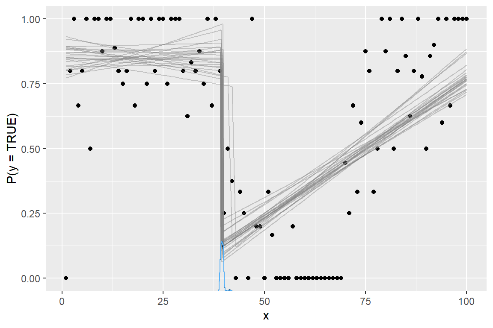

mcp 0.3 added support for more response families and link functions. For example, you can now do
fit = mcp(model, data = df, family = gaussian("log")) fit = mcp(model, data = df, family = binomial("identity"))
This is an ongoing effort and more will be added. This table shows the current status:

- Green: supported and the default priors are unlikely to change.
- Yellow: supported but the default priors may change.
- White: not currently supported. Raise a GitHub issue if you need it.
- Red: impossible or will not be supported.
See the “GLM” menu above for more details on using GLM with mcp.
General remarks
Some link functions are default in GLM for good reasons: they have proven computationally convenient and interpretable. When using a non-default link function, you risk predicting impossible values, at which point mcp will error (as it should) - hopefully with informative error messages. For example a bernoulli("identity") family with model prob ~ 1 + x (i.e., a slope directly on the probability of success) can easily exceed 1 or 0 and there are, of course, no such thing as probabilities below 0% or above 100%. One way to ameliorate such problems is by setting informative priors (e.g., via truncation) to prevent the sampler from visiting illegal combinations of such values.
In short: think carefully and proceed at your own risk.
An example
Reviving the example from the article on binomial models in mcp…
model = list( y | trials(N) ~ 1 + x, # Intercept and slope on P(success) ~ 1 + x # Disjoined slope on P(success) )
we can model it using an identity link function:
ex = mcp_example("binomial") fit = mcp(model, data = ex$data, family = binomial(link = "identity"))
## Parallel sampling in progress...
##
## Error in update.jags(model, n.iter, ...) : Error in node loglik_[63]
## Invalid parent valuesOops, the sampler visited impossible values! Likely P(success) < 0% or P(success) > 100%. Let’s help it along with some more informative priors. For this data and model, the main problem is that the slope of the second segment has too great posterior probability of surpasses 100% with the default mcp priors. So let’s set some more informative priors render a long (early cp_1) and steep (high x_2) slope unlikely:
prior = list( x_2 = "dnorm(0, 0.002)", # Slope is unlikely to be steep cp_1 = "dnorm(30, 10) T(20, )" # Slope starts not-too-early ) fit = mcp(model, data = ex$data, family = binomial(link = "identity"), prior = prior)
plot(fit)

Sampling succeeded! This is a bad model of this data. But it illustrates the necessary considerations and steps to ameliorate problems when going beyond default link functions.
Because of the identity-link, the regression coefficients are interpretable as intercepts and slopes on P(success) in contrast to the “usual” log-odds fitted when family = binomial(link = "logit"). For example, int_1 is inferred probability of success at x = 0 and likewise for int_2 at x = cp_1.
summary(fit)
## Family: binomial(link = 'identity')
## Iterations: 9000 from 3 chains.
## Segments:
## 1: y | trials(N) ~ 1 + x
## 2: y | trials(N) ~ 1 ~ 1 + x
##
## Population-level parameters:
## name match sim mean lower upper Rhat n.eff
## cp_1 30.0 39.66810 39.0000 41.2938 1 699
## int_1 2.0 0.85453 0.7649 0.9463 1 807
## int_2 <NA> NA 0.13001 0.0545 0.2086 1 1592
## x_1 <NA> NA -0.00045 -0.0044 0.0035 1 745
## x_2 -0.2 0.01076 0.0086 0.0131 1 1679Specific remarks
- The mean (\(1 / {inverse\_link}(\lambda)\)) is plotted for
family = exponential()and output byfit$simulate(..., fype = "fitted"). Multiply bylog(2)to get the median.